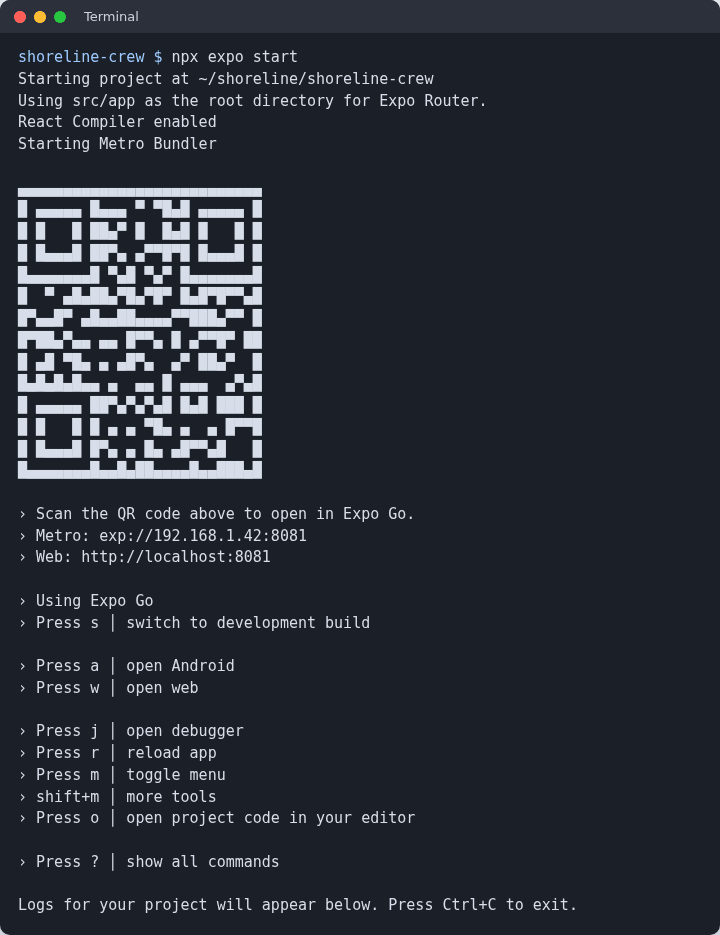
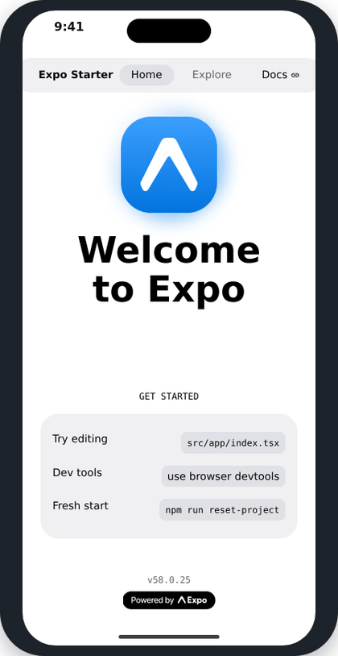
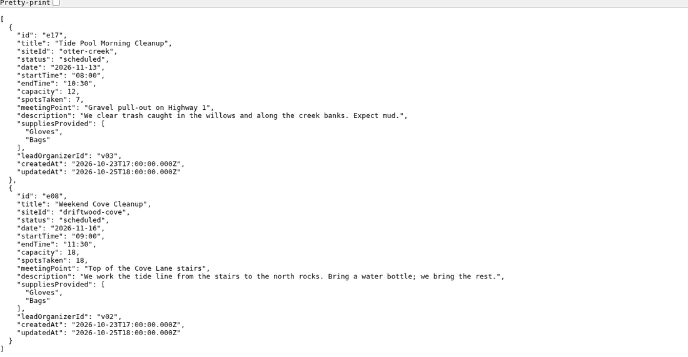

🧰 Lesson 1.2: Your Toolchain
Every mobile developer has a moment they remember: you save a file on your laptop, glance at the phone lying next to the keyboard, and your change is already there. That moment is what this lesson builds. You set up the tools a professional React Native developer uses every day, start the course's API, create the real Shoreline Crew project with Expo, and open it on your own phone (or in the web preview). By the end, the app on the screen says "Shoreline Crew", it passes the linter and the type checker, and you know exactly what to do when something goes red.
🎯 Learning Objectives
By the end of this lesson, you will be able to:
- Set up Node.js, VS Code with Expo Tools and the shoreline-api for mobile development
- Create an Expo SDK 58 project with
create-expo-appand explain what each of its files is for - Run the app on a phone with Expo Go or in the web preview, and choose between Expo Go, an emulator and the web preview
- Use the development loop: Metro, Fast Refresh, reload, the developer menu and the error screens
- Check the project with
npx expo lintandnpx tsc --noEmit, and fix the first-run surprises both tools have
📦 Code for this lesson
This lesson starts from an empty folder, so there is no starting code. Finished code: lesson-02-end.zip. The folder has a README with the commands to run it.
In This Lesson
👋 Welcome: From Snack to Your Own Machine
In Lesson 1.1 you ran React Native in Expo Snack, in a browser tab, with nothing installed. Snack is great for a quick idea, but real apps live on your own computer: in a folder under version control, with your editor, your terminal, your tests and the API they talk to. This lesson moves you there.
Most of what you set up today you already know from the web course: Node.js, npm, VS Code, a dev server, a linter and tsc. What is new is the other end of the cable, which is not a cable at all: a phone that loads your code over Wi-Fi, a development server called Metro, and an app called Expo Go that runs your project without you building anything.
- Why it matters for your work: the development loop is the tool you use hundreds of times a day. Developers who know how it works fix "the phone won't connect" in a minute instead of losing an afternoon, and teams notice.
- Why it matters for the volunteers: the volunteers who will use Shoreline Crew stand on a beach with a phone, not at a desk with a browser. The sooner your app runs on a real phone, the sooner you see it the way they will.
✅ Setup days are allowed to be bumpy
Toolchain lessons are where networks, firewalls and versions get in the way, for everyone. Each problem in this lesson comes with the exact message you will see and the fix. If something fails, that is not a sign you are bad at this: it is the terminal telling you what to do next. Read it, then look it up in the Troubleshooting page.
🧰 The Toolchain at a Glance
Here is everything this course uses, what each tool does, and whether you need to install it. If you finished the React + TypeScript course, the first three are already on your computer.
| Tool | What it does | Install? |
|---|---|---|
| Node.js (with npm and npx) | Runs the Expo CLI, Metro and the shoreline-api on your computer. Not on the phone: your app runs in Hermes there (Lesson 1.1). | The current LTS, 24 or newer |
| VS Code + Expo Tools | Your editor. The Expo Tools extension adds autocomplete and checks for app.json; the project recommends it for you. | Yes, both free |
| Git | Version control. create-expo-app starts a repository and makes the first commit for you. | Recommended |
The Expo CLI (npx expo …) | Starts the development server, installs SDK-compatible packages, lints, exports. It lives in your project's node_modules: nothing to install globally. | No (comes with the project) |
| Metro | Expo's bundler: turns your TypeScript files into one JavaScript bundle and serves it to the phone. | No (started by npx expo start) |
| Expo Go | A free app on your phone that loads your project from Metro. | On your phone (Lesson 1.1, Step 6) |
| shoreline-api | The course's mock back end, the same one Shoreline Crew HQ used. | Download (no npm install) |
| Android Studio (emulator), Xcode (iOS Simulator) | Virtual phones on your computer. Xcode is macOS only. | Optional |
Notice what is not on the list: no global expo-cli, no react-native init, no Java, no Swift. Old tutorials install all of these; current Expo needs none of them to start.
💡 Mental model: base camp and the meeting point
Think of your computer as Shoreline Crew's base camp on a cleanup day. Metro is the supply tent: it packs everything the crew needs (your code, as one bundle) and hands it out. The QR code is the meeting point written on the sign-up sheet: it tells each phone where base camp is (exp:// plus your computer's address on the Wi-Fi). Expo Go is the volunteer who walks over, picks up the bundle and gets to work. When the phone "can't connect", one of three things is wrong: base camp is closed (Metro is not running), the address on the sign is wrong, or there is a fence in between (a different network or a firewall).
Node.js: the current LTS
The Expo CLI and the shoreline-api run on Node.js. The course uses Node 24 LTS (the API needs at least Node 22.18, because it runs TypeScript directly). Check what you have:
node --version
npm --versionExpected output (your exact numbers may be higher)
v24.22.2
11.19.1If node is missing or older than 22.18, install the LTS from nodejs.org (the Windows and macOS installers are the simplest route), or with a version manager such as nvm (macOS, Linux) or fnm (Windows, macOS, Linux) if you already use one. Open a new terminal afterwards, so it finds the new version.
VS Code and the Expo Tools extension
Any editor works, but the course assumes VS Code, which understands TypeScript out of the box. The project you create today includes a .vscode/extensions.json that recommends Expo's own extension, Expo Tools (expo.vscode-expo-tools): when you open the project, VS Code should offer to install it. You can also search for "Expo Tools" in the Extensions view (Ctrl+Shift+X, or ⌘ Cmd+Shift+X on a Mac). The ESLint extension (by Microsoft) is a good second: it shows the linter's findings as you type.
📱 Three Ways to Run Your App
A React Native app can run in three places while you develop it. All three load the same code from the same Metro server, and you can use several at once:
| Expo Go on your phone | Emulator or Simulator | Web preview | |
|---|---|---|---|
| What you need | An iPhone or Android phone with Expo Go, on the same network as your computer | Android Studio (any computer) or Xcode (Mac only), several GB of downloads | A browser on the same computer |
| How you open it | Scan the QR code | Press a (Android) or i (iOS, on a Mac) | Press w |
| Shows | The real thing: native controls, touch, keyboard, camera, location, notifications | Native controls and most device features (no real camera; location is simulated) | Layout, text, data and logic, rendered as HTML |
| Can't show | Native code that is not in Expo Go (that needs a development build, Lesson 9.2) | How the app feels in your hand, real-world performance | Native look, gestures, permissions, the camera, haptics, secure storage |
The course's default is Expo Go on a phone, with the web preview for quick looks. Either one is enough to finish this lesson. The screenshots in the lessons come from the web preview, shown inside a drawn phone frame, and the captions say so whenever a phone would look different.
Expo Go on your phone
When npx expo start is running, the terminal shows a QR code. How you scan it depends on the phone:
- Android phone: open Expo Go and tap Scan QR code.
- iPhone: open the Camera app, point it at the QR code and tap the Expo Go banner that appears. The first time, iOS asks whether Expo Go may find devices on your local network: allow it, or the app cannot reach your computer.
The phone then downloads the JavaScript bundle (you should see a progress indicator, which takes a few seconds the first time) and your app appears. The phone and your computer must be on the same Wi-Fi network, and that network must let devices talk to each other. Home networks usually do; guest, school, hotel and many office networks block it.
📱 On your phone
Expo Go supports one Expo SDK at a time, and the version in the stores supports the newest one, which is SDK 58 for this course. If Expo Go says the project is incompatible, update Expo Go from the store first (Troubleshooting). The course could not run a real phone while it was checked, so these steps follow Expo's documentation: if your screen words things slightly differently, go by what it says.
When the phone cannot reach your computer
Work through this list in order; most problems are one of the first three:
- Same network? Check the Wi-Fi name on both. A phone on mobile data cannot reach your laptop.
- Does the address under the QR code (
exp://192.168…) look like your computer's address on that network? If it starts with172.and you are on Windows with WSL, read the card below. - Firewall: the first time Node.js opens a port, Windows and macOS may ask whether to allow it. Allow it on private networks.
- iPhone: Settings > Privacy & Security > Local Network: Expo Go must be switched on.
- Still stuck? Use the web preview for now and come back to it, or try the tunnel:
npx expo start --tunnelsends Metro's traffic through Expo's tunnel service (it offers to install a helper package the first time, and it is slower). The Troubleshooting page has more.
⚠️ Windows with WSL 2: the phone cannot see inside WSL
If you run your terminal in WSL (Ubuntu on Windows), WSL normally lives behind its own private network address, often 172.x.x.x. Expo prints that address under the QR code, and your phone cannot reach it. You have three fixes: run the course's Node commands in Windows itself (PowerShell; every npx command in this course works there unchanged); or turn on WSL's mirrored networking (Windows 11: add networkingMode=mirrored under [wsl2] in %UserProfile%\.wslconfig, run wsl --shutdown, reopen) and allow ports 8081 and 4000 through the Windows firewall; or use the web preview, which works from WSL because your Windows browser can reach localhost. Details: Troubleshooting: WSL.
Optional: the Android emulator and the iOS Simulator
A virtual phone on your computer is handy when you have no phone, when you need a second platform, or later for development builds. Neither is required in this course. Both are big downloads: start them while you do something else.
🤖 Optional sidebar: the Android emulator (Windows, macOS, Linux)
- Install Android Studio and follow Expo's guide Android Studio Emulator: it lists the SDK components to tick and the
ANDROID_HOMEsetting for your system. - In Android Studio's Device Manager, create a virtual device (a recent Pixel with a current Android image is a good choice) and start it.
- With the emulator running, press a in the terminal where
npx expo startruns. Expo installs Expo Go in the emulator the first time and opens your app. (Shift+a lets you choose a device when you have several.)
The emulator reaches your computer at a special address, 10.0.2.2, which matters when the app calls the API (Lesson 5.1). On Windows with WSL, install Android Studio in Windows. This course could not run the emulator while it was checked: these steps follow Expo's documentation.
🍎 Optional sidebar: the iOS Simulator (Mac only)
- Install Xcode from the Mac App Store (it is large) and open it once to accept the license; Expo's guide iOS Simulator shows where Xcode installs the iOS platform and its simulators.
- With
npx expo startrunning on a Mac, the key menu also offers i (open iOS simulator). Press it: Expo boots a simulator, installs Expo Go and opens your app.
On Windows and Linux there is no iOS Simulator and no i key in the menu: use Expo Go on an iPhone instead. Building iPhone apps without a Mac is possible with EAS in the cloud (Module 9).
🔄 How Your Code Reaches the Phone
npx expo start starts Metro, Expo's JavaScript bundler, and a small web server around it. It is the mobile counterpart of the Vite dev server you used for Shoreline Crew HQ, with a few jobs that matter on a phone:
| Metro's job | What it means for you |
|---|---|
| Transform | Your TypeScript and JSX become plain JavaScript (types are removed, not checked: that is tsc's job). |
| Bundle | Your files and the packages they import become one bundle per platform (iOS, Android, web). |
| Serve | Phones, emulators and the browser download the bundle over HTTP, from port 8081. |
| Watch | When you save a file, Metro rebuilds just what changed and pushes it to every connected device. |
| Cache | Results are cached for speed. When something seems stuck, npx expo start --clear starts with an empty cache. |
When you run it, the terminal shows the QR code, the addresses and a menu of keys:

exp:// address will differ: they encode your computer's address on your network.Expected output (QR code left out; your address and folder will differ)
Starting project at ~/shoreline/shoreline-crew
Using src/app as the root directory for Expo Router.
React Compiler enabled
Starting Metro Bundler
...
› Scan the QR code above to open in Expo Go.
› Metro: exp://192.168.1.42:8081
› Web: http://localhost:8081
› Using Expo Go
› Press s │ switch to development build
› Press a │ open Android
› Press w │ open web
› Press j │ open debugger
› Press r │ reload app
› Press m │ toggle menu
› shift+m │ more tools
› Press o │ open project code in your editor
› Press ? │ show all commands
Logs for your project will appear below. Press Ctrl+C to exit.The two addresses are the important lines. exp://192.168.1.42:8081 is what the QR code contains: your computer's address on your Wi-Fi (yours will be different), for Expo Go. http://localhost:8081 is for the web preview, in a browser on the same computer only. "Using Expo Go" means the QR code opens Expo Go; s switches to development builds, which you meet in Module 9.
The development loop
Fast Refresh is the same idea as hot module replacement on the web: when you save a component file, the running app swaps in the new code, usually within a second or two, and keeps the component's state. If you edit a file that is not a component (a helper, a constant), Fast Refresh reloads more of the app. When the app is in a strange state, press r in the terminal to reload it completely.
| Key (in the terminal running Metro) | What it does |
|---|---|
| r | Reload the app on every connected device |
| m | Open the developer menu on the connected phone (or shake the phone) |
| w | Open the web preview in your browser |
| a / i | Open the Android emulator / the iOS Simulator (Mac) |
| j | Open the debugger (Lesson 8.4) |
| c | Show the QR code again after logs have scrolled it away |
| ? | Show all commands |
| Ctrl+C (also on a Mac) | Stop Metro |
The developer menu on the phone (shake it, or press m) has Reload, a link back to Expo Go's home, the element inspector and the performance monitor. You will use the last two in Module 8.
When it goes red
Errors appear in two places at once. On the phone, a syntax error or a crash while rendering fills the screen with an error message, the file and the line; smaller problems (warnings, errors in event handlers) show up as a notice at the bottom that you can tap to read. In the terminal, Metro prints the same error with a code frame. Fix the file and save: the screen recovers by itself, no reload needed. Lesson 1.1 called these red screens feedback, not failure: read them from the top, exactly like a TypeScript error.
In the web preview, the same errors appear in the browser as an error overlay and in the browser's developer tools console.
🗂️ Inside a New Expo Project
You create the project with one command (Step 3 of the project). It uses Expo's default template for SDK 58: TypeScript, Expo Router and a two-tab example app. It runs npm install for you and starts a Git repository with a first commit.

npm run reset-project, in the web preview. On a phone the template shows its two tabs, Home and Explore, in the platform's own tab bar instead of this web header.The example app shows off Expo's features, but it is not Shoreline Crew. Its own start screen suggests the next move: Fresh start: npm run reset-project. That script deletes the example screens, components and images and leaves two small files. It first asks whether to keep the old files in an example folder: answer n. If you keep them, the type checker still checks them and fails on their imports. Here is the project after the reset and after this lesson's work (node_modules/, .git/ and .expo/ left out):
shoreline-crew/
.claude/settings.json notes for the Claude Code assistant (see below)
.vscode/ editor settings and the Expo Tools recommendation
.gitignore what Git leaves out (node_modules, .expo, .env*.local …)
assets/ the app icon, Android adaptive icon layers, splash image, web favicon
src/
app/ routes: every file here is a screen (Expo Router)
_layout.tsx the root layout: a Stack of screens
index.tsx the first screen, at the route /
AGENTS.md notes for AI coding assistants (see below)
LICENSE the template's license (MIT)
README.md the template's getting-started notes
app.json the app's configuration: name, icons, scheme, plugins
eslint.config.js the linter's rules (written by the first npx expo lint)
expo-env.d.ts types Expo generates (not committed to Git)
package.json dependencies and scripts
tsconfig.json TypeScript settings, extending Expo's baseThe files that matter today
package.json:"main": "expo-router/entry"makes Expo Router the entry point, so you never write anApp.tsxor amain.tsx. The dependencies are pinned to the SDK ("expo": "~58.0.25","react-native": "0.88.1"), which is why you install Expo and React Native packages withnpx expo install, notnpm install: it picks the version that matches SDK 58 (Lesson 2.3 does it for the first time).app.json: the app's identity."name"and"slug"(shoreline-crew),"scheme": "shorelinecrew"for deep links (Lesson 4.4), the icons and splash screen (Lesson 2.3 replaces them with Shoreline Crew's), and two experiments switched on:typedRoutes(TypeScript checks your links, Lesson 4.1) andreactCompiler(automatic memoization, Lesson 8.4). It becomesapp.config.tsin Lesson 9.1.src/app/: Expo Router's routes, the phone's version of the routes you wrote in the web course. Only screens and layouts go here; components, hooks and API code go elsewhere insrc/(the reset script says so too).tsconfig.json:"strict": true, and the@/import alias forsrc/(import … from '@/api/client'), which you start using in Lesson 1.3.
The two files the reset script leaves are short. The root layout says "these screens are a stack" (you met Expo Router's layouts in principle in Lesson 1.1; Module 4 is all about them):
import { Stack } from "expo-router";
export default function RootLayout() {
return <Stack />;
}And the first screen, before you change it (you replace it in Step 6):
import { Text, View, StyleSheet } from "react-native";
export default function Index() {
return (
<View style={styles.container}>
<Text>Edit src/app/index.tsx to edit this screen.</Text>
</View>
);
}
const styles = StyleSheet.create({
container: {
flex: 1,
alignItems: "center",
justifyContent: "center",
},
});Everything in it is from Lesson 1.1: a View, a Text and a StyleSheet. The default export is the screen: Expo Router finds it because the file is called index.tsx inside src/app/.
AGENTS.md and .claude/settings.json
The template also adds two files for AI coding assistants. AGENTS.md is a plain-text briefing that many assistants read before they touch a project: it tells them to use npx expo install, to check the versioned Expo docs instead of trusting memory, to keep routes in src/app/, and to "run lint and typecheck before declaring any task done". It is worth reading yourself: it is a good one-page summary of how this project wants to be worked on, and you will follow the same rules. .claude/settings.json switches on an Expo plugin for one particular assistant, Claude Code. If you do not use an assistant, both files simply do nothing; keep them, they are part of what the template gives every new Expo project.
💡 Mental model: the template is a sample kit, not your camp
A new Expo project arrives like a sample kit from a supplier: a bit of everything, nicely arranged, to show what is possible. You look through it, keep the useful parts (the config, the tooling, the icons for now) and clear the table before you set up your own camp. reset-project is clearing the table.
✅ Lint and Type Check from Day One
Metro removes types without checking them, exactly like Vite did in the web course. So, as there, two separate tools keep the code honest, and the project's own AGENTS.md asks for both before any task is done:
npx expo lint
npx tsc --noEmitnpx expo lint runs ESLint with Expo's rules (eslint-config-expo: React, hooks, imports and TypeScript rules). The project has no ESLint configuration yet: the first run asks whether to set it up. Answer y: it installs eslint and eslint-config-expo as dev dependencies and writes this file:
// https://docs.expo.dev/guides/using-eslint/
const { defineConfig } = require('eslint/config');
const expoConfig = require('eslint-config-expo/flat');
module.exports = defineConfig([
expoConfig,
{
ignores: ['dist/*'],
},
]);Then comes a surprise: the first run ends with an error, even though ESLint was just installed:
Expected output (the first npx expo lint; timings and counts may differ)
✔ No ESLint config found. Install and configure ESLint in this project? … yes
ESLint is required to lint your project. Installing eslint@^9.0.0, eslint-config-expo@~58.0.4
› Installing 2 other packages using npm
› Using ~58.0.4 instead of ~58.0.4 for eslint-config-expo because this version was explicitly provided. Packages excluded from dependency validation should be listed in expo.install.exclude in package.json. Learn more: https://docs.expo.dev/more/expo-cli/#configuring-dependency-validation
> npm install
npm warn deprecated eslint@9.39.5: This version is no longer supported. Please see https://eslint.org/version-support for other options.
added 235 packages, and audited 793 packages in 6s
164 packages are looking for funding
run `npm fund` for details
8 moderate severity vulnerabilities
To address issues that do not require attention, run:
npm audit fix
To address all issues (including breaking changes), run:
npm audit fix --force
Run `npm audit` for details.
✔ Installed eslint@^9.0.0, eslint-config-expo@~58.0.4
ESLint has been configured 🎉
CommandError: npx expo lint requires ESLint version 8.57.0 or greater. Upgrade eslint or use npx eslint directly.The last line is a known hiccup of the first run (the CLI checked for ESLint before it had installed it). Run npx expo lint again: it lints, and when everything is clean it prints nothing at all. No news is good news. When there are problems, it lists them and ends with a line such as ✖ 2 problems (1 error, 1 warning). The npm warn deprecated eslint@9… line is a warning from npm about ESLint 9, the version Expo's rules use: not an error, nothing to fix.
npx tsc --noEmit is the same type check as in the web course. One difference: Expo generates some type declarations (expo-env.d.ts, and the typed routes in .expo/types/) the first time you run npx expo start, and they are not committed to Git. Before that first start, tsc fails on things it cannot find yet (see Common Mistakes). After it, and after the reset, a clean type check also prints nothing.
🧩 Version note: TypeScript 6.0
The Expo SDK 58 template pins "typescript": "~6.0.3". Shoreline Crew HQ used TypeScript 7.0. Keep the SDK's version: Expo tests each SDK with one TypeScript version, and npx expo install --check flags anything else. Everything you write in this course works the same in both; Lesson 1.3 shows the few settings that differ from the web project.
One more health check is worth knowing: npx expo-doctor checks the project's dependencies and configuration against the SDK (it downloads itself the first time, so it asks to proceed):
Expected output
Need to install the following packages:
expo-doctor@1.21.8
Ok to proceed? (y) y
20/20 checks passed. No issues detected!⚠️ Common Mistakes
⚠️ Running tsc before the first npx expo start
In a project that has never been started, the type declarations Expo generates do not exist yet, so a fresh template fails the type check:
Expected output (a fresh template, before the first start; shortened)
src/components/animated-icon.web.tsx:5:21 - error TS2307: Cannot find module './animated-icon.module.css' or its corresponding type declarations.
5 import classes from './animated-icon.module.css';
~~~~~~~~~~~~~~~~~~~~~~~~~~~~
...
src/constants/theme.ts:6:8 - error TS2882: Cannot find module or type declarations for side-effect import of '@/global.css'.
6 import '@/global.css';
~~~~~~~~~~~~~~
Found 3 errors in 3 files.
Errors Files
1 src/components/animated-icon.web.tsx:5
1 src/components/app-tabs.web.tsx:38
1 src/constants/theme.ts:6Nothing is wrong with your code: run npx expo start once (stop it with Ctrl+C), then npx tsc --noEmit again. The course's downloads do not include the generated files either: if tsc ever complains about missing modules or types in a downloaded project, start it once first. (Troubleshooting)
⚠️ Answering y to the reset-project question
With y, the example app moves to an example/ folder inside your project. TypeScript and ESLint still check it, and its @/ imports no longer point anywhere, so you get errors in files you never wrote. Delete the example folder (Troubleshooting). The reset script also deletes itself, so npm run reset-project works only once.
⚠️ Giving up after the first npx expo lint
CommandError: npx expo lint requires ESLint version 8.57.0 or greater right after "ESLint has been configured 🎉" looks like a failure. It is the first-run hiccup: run the command again (Troubleshooting).
⚠️ Running npm audit fix --force
create-expo-app and the ESLint install end with "moderate severity vulnerabilities" and a suggestion to run npm audit fix --force. Do not: "force" means it may install versions that break the SDK's tested set. The reports are mostly about development tools, not code that ships in your app. Update with the SDK instead (npx expo install --fix, and a new SDK when you upgrade).
⚠️ Typing localhost on the phone
On a phone, localhost is the phone itself. Opening http://localhost:8081 in the phone's browser shows nothing, and it is not how Expo Go connects anyway: scan the QR code, which carries your computer's network address. The same rule decides how the app reaches the API in Lesson 5.1.
⚠️ A typo in a style name
StyleSheet.create is fully typed, so styles.tagLine instead of styles.tagline is a type error. The phone does not complain at all: the style is just undefined, and the text silently loses its look. That is exactly the kind of bug tsc is for:
Expected output
src/app/index.tsx:9:27 - error TS2551: Property 'tagLine' does not exist on type 'Readonly<{ container: { flex: number; alignItems: "center"; justifyContent: "center"; gap: number; padding: number; }; title: { fontSize: number; fontWeight: "bold"; color: string; }; tagline: { fontSize: number; color: string; }; }>'. Did you mean 'tagline'?
9 <Text style={styles.tagLine}>Many hands, cleaner sands.</Text>
~~~~~~~
Found 1 error in src/app/index.tsx:9🛠️ Project: Shoreline Crew on Your Phone
You set up your computer, start the API, create the Shoreline Crew project, open it on your phone (or in the web preview), and give it its first screen. Keep two terminals open by the end: one for the API, one for Metro. Every command is the same in PowerShell, Terminal on macOS and a Linux shell unless a step says otherwise.
Step 1: Check Node.js and VS Code (10 min)
- In a terminal, run
node --version. You need 22.18 or newer; the course uses 24 LTS. If it is older or missing, install the LTS as described in the toolchain section and open a new terminal. - Open VS Code. If you do not have it, install it from code.visualstudio.com. Make sure the
codecommand works in your terminal (in VS Code: Command Palette, Ctrl+Shift+P or ⌘ Cmd+Shift+P, then "Shell Command: Install 'code' command in PATH" on a Mac; Windows and Linux installers add it). - Check Git with
git --version. If it is missing, install it from git-scm.com (recommended, not required).
Step 2: The course folder and the API (10 min)
- If you did the React + TypeScript course, you already have a
shoreline/folder withshoreline-api/andshoreline-hq/in it: use it, the API is the same. Otherwise create the folder where you keep your code:mkdir shoreline cd shoreline - If you have no
shoreline-apiyet: download shoreline-api.zip and extract it intoshoreline/, so that you haveshoreline/shoreline-api/server.ts. (Windows: right-click the zip, Extract All; macOS: double-click it; Linux:unzip shoreline-api.zip.) - Start the API in its own terminal. It needs no
npm install:cd shoreline-api node server.tsExpected output
Shoreline Crew API running at http://localhost:4000/api sample sign-in: maya.okafor@example.com (organizer) or theo.nakamura@example.com (volunteer), password shoreline-demo Press Ctrl+C to stop. - Open http://localhost:4000/api/events?when=upcoming&perPage=2 in your computer's browser. You should see JSON with two upcoming cleanups. Leave this terminal running.

/api/events?when=upcoming&perPage=2 in your computer's browser. If you see JSON like this, Node.js and the API work. Dates move with today.The app does not call the API yet (Lesson 1.3 makes the first request). Starting it now gets you used to the two-terminal setup you will have in every lesson from here on. The API reference lists every endpoint and sample account.
Step 3: Create the project and take the tour (15 min)
- Open a second terminal in the
shoreline/folder (not insideshoreline-api) and create the project:
If npx asks to installnpx create-expo-app@latest shoreline-crewcreate-expo-app, answer y. It downloads the template and installs about 560 packages (a minute or less on a good connection):Expected output (counts and timings may differ)
Creating shoreline-crew using the default@sdk-58 template. Tip: $ npx create-expo --template to pick different templates $ npx create-expo --example to explore https://github.com/expo/examples ✔ Downloaded and extracted project files. > npm install added 557 packages, and audited 558 packages in 22s 45 packages are looking for funding run `npm fund` for details 3 moderate severity vulnerabilities To address all issues (including breaking changes), run: npm audit fix --force Run `npm audit` for details. ✅ Your project is ready! To run your project, navigate to the directory and run one of the following npm commands. - cd shoreline-crew - npm run android - npm run ios # you need to use macOS to build the iOS project - use the Expo app if you need to do iOS development without a Mac - npm run web - Open the project in VS Code:
When VS Code offers to install the recommended extensions, accept: that is Expo Tools.cd shoreline-crew code . - Take the tour with the project section open beside you:
package.json(find"main"and theexpoversion),app.json(find"scheme"and"experiments"),src/app/, andAGENTS.md(read it once from top to bottom).
Step 4: Start Metro and open the app (20 min)
- In the
shoreline-crewterminal, start the development server:
You should see the QR code, thenpx expo startexp://address and the key menu from the Metro section. - With a phone: scan the QR code (Android: in Expo Go, Scan QR code; iPhone: with the Camera app, then allow Local Network access). After a short download, the template's welcome screen appears on your phone.
- Without a phone (or as well): press w. Your browser opens
http://localhost:8081with the template's welcome screen, and the terminal logs a line that starts withWeb Bundled. Narrow the browser window, or use your browser's device toolbar, to see it at phone size. - Can't connect from the phone? Go through the checklist in the three-ways section (and the WSL card if you use WSL). If you cannot fix it today, continue with the web preview: it is a valid way to finish this lesson, and Lesson 5.1 comes back to networking.
Step 5: Feel the development loop (10 min)
- In VS Code, open the template's
src/app/index.tsxand find the heading textWelcome to Expo( is a non-breaking space: JSX understands HTML entities in text). ChangeExpotoShoreline Crewand save (Ctrl+S, or ⌘ Cmd+S on a Mac). Watch the phone or the browser: the heading changes without a reload. - Press r in the Metro terminal to reload, then m (or shake the phone) to open the developer menu. Look at its options, then close it.
- Make a mistake on purpose: delete the closing
>of any JSX tag in that file and save. Read the error on the phone (or in the browser) and in the terminal: both name the file and the line. Undo (Ctrl+Z, or ⌘ Cmd+Z), save, and watch the app recover by itself.
Step 6: Reset the project and write the first screen (15 min)
- Stop Metro with Ctrl+C and run the reset script. Answer n to its question:
npm run reset-projectExpected output
> shoreline-crew@1.0.0 reset-project > node ./scripts/reset-project.js Do you want to move existing files to /example instead of deleting them? (Y/n): n ❌ /src deleted. ❌ /scripts deleted. ❌ /assets/images/expo-badge.png deleted. ❌ /assets/images/expo-badge-white.png deleted. ❌ /assets/images/expo-logo.png deleted. ❌ /assets/images/logo-glow.png deleted. ❌ /assets/images/react-logo.png deleted. ❌ /assets/images/react-logo@2x.png deleted. ❌ /assets/images/react-logo@3x.png deleted. ❌ /assets/images/tutorial-web.png deleted. ❌ /assets/images/tabIcons deleted. 📁 New /src/app directory created. 📄 src/app/index.tsx created. 📄 src/app/_layout.tsx created. ✅ Project reset complete. Next steps: 1. Run `npx expo start` to start a development server. 2. Edit src/app/index.tsx to edit the main screen. 3. Put all your application code in /src, only screens and layout files should be in /src/app. - Replace everything in
src/app/index.tsxwith Shoreline Crew's first screen:Two details:shoreline-crew/src/app/index.tsximport { StyleSheet, Text, View } from 'react-native'; export default function Index() { return ( <View style={styles.container}> <Text accessibilityRole="header" style={styles.title}> Shoreline Crew </Text> <Text style={styles.tagline}>Many hands, cleaner sands.</Text> </View> ); } const styles = StyleSheet.create({ container: { flex: 1, alignItems: 'center', justifyContent: 'center', gap: 8, padding: 24, }, title: { fontSize: 32, fontWeight: 'bold', color: '#0b3954', }, tagline: { fontSize: 18, color: '#1f6f8b', }, });accessibilityRole="header"tells screen readers (VoiceOver, TalkBack) that "Shoreline Crew" is a heading, the way an<h1>would on the web; and the colors are Shoreline Crew's Deep Tide and Sea Teal from the HQ app (Lesson 2.1 moves them into a theme file). The string quotes are single quotes, like the rest of Expo's template code. - Start Metro again with
npx expo start, and open the app again (scan the QR code, or press w). You see Shoreline Crew's name and tagline in the middle of the screen. The bar at the top is the Stack's header: it shows the route's name,index, until you give screens titles in Lesson 4.1.

index) until Lesson 4.1 names it.Step 7: Lint, type check and commit (15 min)
- In a third terminal (or after stopping Metro), in
shoreline-crew, run the linter. Answer y to set up ESLint, and when it ends with the version message, run it a second time:
The second run prints nothing: the project is clean. Opennpx expo lint npx expo linteslint.config.jsto see what it wrote. - Type check. Because you started Metro in Step 4, the generated types exist; this also prints nothing:
npx tsc --noEmit - Run the health check and answer y if npx asks to install it:
npx expo-doctorshould say "No issues detected!". - Save your work in Git (the template already made the first commit):
git add -A git commit -m "Start Shoreline Crew: first screen, ESLint"If your
shorelinefolder is itself a Git repository (from the web course, for example),shoreline-crewis now a repository inside a repository. Keep the two apart: add the lineshoreline-crew/to the outer repository's.gitignoreand commit that there. Shoreline Crew keeps its own history, and Lesson 9.3 pushes it to a GitHub repository of its own.
🧭 For your own app
Your final project (Lesson 10.1) will be an app of your own. In your journal, note which devices its users carry (iPhone, Android or both), and which of the three ways to run you will test it on. If your answer includes a platform you cannot test on yet, that is worth knowing now.
✅ Project Completion Checklist
- ☐
node --versionshows 22.18 or newer, and VS Code has Expo Tools - ☐ shoreline-api runs in its own terminal and shows cleanups at
http://localhost:4000/api/events - ☐ I created
shoreline-crewwithcreate-expo-appand read itsAGENTS.md - ☐ The app opened in Expo Go on my phone, or in the web preview, and a saved change appeared without a reload
- ☐ I reset the project (answering n), and the first screen shows "Shoreline Crew" and the tagline
- ☐
npx expo lintandnpx tsc --noEmitboth print nothing, and my work is committed
🏋️ Hands-on Exercises
Optional, but recommended: each one takes five to fifteen minutes.
🏋️ Exercise 1: Read two type errors
Make each mistake below in src/app/index.tsx, run npx tsc --noEmit, read the error, then undo it. (a) Change styles.tagline to styles.tagLine. (b) Change the closing </Text> of the tagline to </Txt>. For each one, write down: the error code, the line and column, and what the app shows while the mistake is saved.
💡 Hint
The first one is valid JavaScript (reading a property that does not exist gives undefined). The second one is not valid JSX at all. Which of the two can Metro still bundle?
✅ Solution
(a) is the TS2551 error from Common Mistakes: "Property 'tagLine' does not exist… Did you mean 'tagline'?" at 9:27. The app keeps running, and the tagline just loses its size and color. (b) is a syntax error, so Metro cannot bundle it either: the app shows the error screen until you fix it. tsc reports it like this:
Expected output
src/app/index.tsx:9:64 - error TS17002: Expected corresponding JSX closing tag for 'Text'.
9 <Text style={styles.tagline}>Many hands, cleaner sands.</Txt>
~~~
Found 1 error in src/app/index.tsx:9The lesson: the phone tells you about errors that stop the code from running; tsc also tells you about the ones that silently do the wrong thing.
🏋️ Exercise 2: Explore the key menu
With npx expo start running, press ?. Find the keys that (1) show the QR code again, (2) let you choose an Android device when you have several, and (3) open your project in your editor. Which key from the short menu is missing on Windows and Linux, and why?
💡 Hint
Compare the full list with the table in the Metro section, and think about which platform's simulator needs a Mac.
✅ Solution
The full list (on Linux) looks like this:
Expected output (after pressing ?)
...
› Using Expo Go
› Press s │ switch to development build
› Press a │ open Android
› shift+a │ select an Android device or emulator
› Press w │ open web
› Press r │ reload app
› Press j │ open debugger
› Press m │ toggle menu
› shift+m │ more tools
› Press o │ open project code in your editor
› Press c │ show project QR(1) c, (2) Shift+a, (3) o. On Windows and Linux there is no i (open iOS simulator), because the iOS Simulator only runs on macOS.
🏋️ Exercise 3: Pick the way to run it
For each situation, choose Expo Go on a phone, the Android emulator, the iOS Simulator or the web preview, and say why: (a) you are on a Windows laptop on a café's guest Wi-Fi with an Android phone; (b) you want to see how the Shoreline Crew heading looks with a long title, quickly; (c) you are on a Linux desktop and want to check something on an iPhone; (d) you want to feel how big the tap targets are.
💡 Hint
Guest networks often block device-to-device traffic. The iOS Simulator needs a Mac. Only one option is in your hand.
✅ Solution
(a) The Android emulator or the web preview: the guest network probably keeps the phone from reaching the laptop (or try --tunnel, or the phone's hotspot). (b) The web preview: text and layout, fastest to check. (c) Expo Go on an iPhone: there is no iOS Simulator on Linux. (d) Expo Go on a phone: only a real finger on real glass tells you that.
🏋️ Exercise 4: Read the template you deleted (Stretch)
In a scratch folder outside shoreline/, create a second project with npx create-expo-app@latest expo-sample and do not reset it. Open src/components/app-tabs.tsx and src/components/app-tabs.web.tsx. What is different between them, and how does the app know which one to use on a phone and which in the web preview?
💡 Hint
Look at the imports at the top of each file and at the file names. Both are imported as @/components/app-tabs.
✅ Solution
app-tabs.tsx uses NativeTabs from expo-router/native-tabs, the platform's own tab bar; app-tabs.web.tsx builds its own tab bar for the browser from the "headless" tab components in expo-router/ui (Tabs, TabList, TabTrigger, TabSlot). Metro picks the file by its platform extension: when it bundles for the web it prefers .web.tsx, for a phone the plain .tsx (and .ios.tsx / .android.tsx exist too). Lesson 2.5 uses this for platform-specific code. Delete the sample project when you are done.
🎯 Quick Quiz
🎯 Check Your Understanding
Question 1: On Windows, you run npx expo start in WSL. The terminal shows exp://172.26.140.5:8081, and Expo Go on your phone times out. What is the most likely cause?
Question 2: Right after create-expo-app, before starting anything, you run npx tsc --noEmit and get TS2307 and TS2882 errors about a .module.css file and @/global.css. What do you do first?
Question 3: npm run reset-project asks: "Do you want to move existing files to /example instead of deleting them? (Y/n)". What should you answer for Shoreline Crew, and why?
Question 4: Shoreline Crew is open in Expo Go. You change the tagline in src/app/index.tsx and save. What happens on the phone?
Question 5: You have a Windows laptop and no phone. You want to see Shoreline Crew with Android's own native controls. Which option shows that?
❓ Common Questions at This Stage
Do I need an Expo account?
Not for this lesson, and not while you develop with Expo Go or the web preview. You create a free Expo account in Module 9, when you build the app in the cloud with EAS. Expo Go may invite you to sign in; you can skip it.
Can I use yarn, pnpm or bun instead of npm?
Expo supports them, and npx expo install uses whichever one your project uses. The course uses npm everywhere so that the commands and the lock file match the downloads; if you switch, translate the commands yourself.
Why did create-expo-app already make a Git commit?
So that the untouched template is in your history: after reset-project, git status shows exactly what the reset deleted and changed, and you can always look at the original files with Git. Commit after each lesson's project; it makes comparing with the course's downloads much easier.
Is the web preview "cheating"?
No. It is a real build of your app for the web, and Expo can even ship it as a website. It is just not a phone: it cannot show native controls, permissions, the camera or how gestures feel. Use it freely for layout and data, and check on a phone or an emulator whenever a lesson says so.
Should I delete AGENTS.md and the .claude folder?
Keep them. They are part of every new Expo project, the course's downloads include them, and AGENTS.md is a useful summary of the project's rules even if you never use an AI assistant. If you do use one, it reads them automatically.
🌟 Going Further: Bonus Challenge
Set up a second way to run the app: the Android emulator (any computer) or the iOS Simulator (a Mac), following the optional sidebars in the three-ways section. Open Shoreline Crew in it with a or i while Expo Go on your phone stays connected, then save a change and watch both update at once. Note in your journal how long the setup took, and one thing that looks different from the web preview.
📓 Learning Journal
Take five to ten minutes and add today's entry to your journal:
- Key concepts you learned today
- Techniques that clicked (and the ones that have not, yet)
- Questions or confusion to look up or bring to the next session
- Ideas to try on your own
- Progress and feelings: how did this lesson go for you?
✍️ This lesson's prompt: Describe the first moment your change appeared on the phone (or in the preview). What did you have to fix before you got there, and how did you find the fix? Write down your setup as a short checklist (which network, which terminal, which way to run) so that "future you" can get going again in two minutes.
📝 Lesson Summary
🎓 Key Takeaways
- The toolchain is Node.js LTS, VS Code with Expo Tools, the Expo CLI via
npx(no global installs), Expo Go on your phone and the shoreline-api in its own terminal npx create-expo-app@latestmakes an SDK 58 project with TypeScript and Expo Router;npm run reset-project(answer n) clears the example app- Metro transforms, bundles, serves and watches your code; Expo Go reaches it through the QR code's
exp://address, the web preview throughlocalhost:8081 - Fast Refresh shows saved changes in about a second; r reloads, m opens the developer menu, errors show on the device and in the terminal
- Phone and computer must share a network that allows device-to-device traffic; WSL 2 needs PowerShell or mirrored networking
npx expo lint(answer y, then run it again) andnpx tsc --noEmit(after the first start) both print nothing when the project is cleanAGENTS.mdand.claude/settings.jsonare the template's notes for AI coding assistants; keep them
| If you want to… | Go to |
|---|---|
| Fix "the phone can't connect" or a first-run error | Troubleshooting |
Look up an npx expo command or key | Expo CLI Cheat Sheet |
| See the API's endpoints and sample accounts | Shoreline API Reference |
| Set up an emulator or simulator | Expo: Set up your environment |
🏆 What You've Accomplished
- You set up a professional React Native toolchain and the course's API on your computer
- You created the real Shoreline Crew project and know what each of its files is for
- You ran your own app on a phone or in the web preview and watched your edits appear live
- You read real error messages from the phone, Metro, ESLint and TypeScript, and fixed them
- Your project lints and type-checks cleanly, and it is committed in Git
🔭 Looking Ahead
In Lesson 1.3: From the HQ to the Phone you bring Shoreline Crew HQ's shared code across: the API types, the type guards, the error helpers and the date and availability utilities. You find out which parts copy over unchanged and which have to be rewritten for a phone, give the app its API address through an EXPO_PUBLIC_ environment variable, and make the first real request: a list of cleanup titles from the shoreline-api, on your screen.
📋 Before the Next Lesson
- Make sure both
node server.ts(inshoreline-api) andnpx expo start(inshoreline-crew) start without errors - If you have Shoreline Crew HQ from the React + TypeScript course, find its
src/api/andsrc/utils/folders: you copy from them next - Write today's journal entry and your two-minute setup checklist
🌱 Encouragement for the Journey
Setting up a toolchain is the least glamorous part of mobile development, and you just did it: a phone, a bundler, an API and a type checker, all working together. Every problem you solved today (a network, a version, a first-run error) is one you will recognize in seconds next time, and one you will be able to solve for a teammate. From here on, the work is building the app.